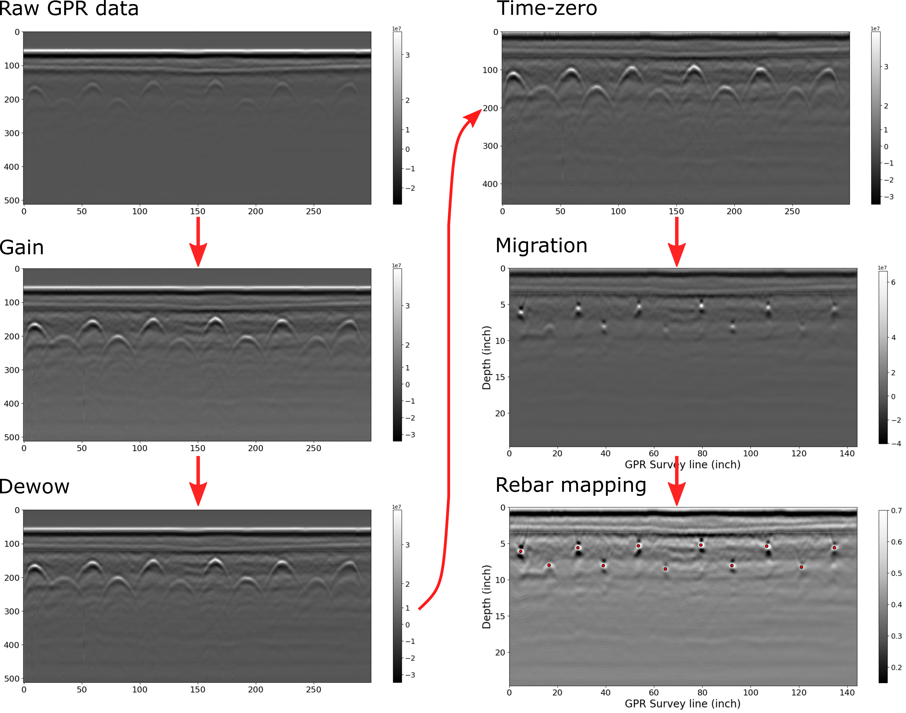

Introduction to Reinforcement Bars
Concrete is a composite material composed of aggregates (gravel and sand), that are glued with cement and water. Due to the nature of its material structure, it is strong in compression but relatively weak in tension. (ASTM International, 1999, 2001) To address the inherent weakness of concrete in tension, reinforcement bars (rebars), typically made of steel, are added to provide tensile strength to the structure. By incorporating rebars into the concrete, the structure becomes capable of withstanding both compressive and tensile forces more effectively.
Hence, concrete with rebars is a widely used material in bridge construction. However, over time, these bridges are subject to some of environmental factors and loading conditions. These include temperature fluctuations, chemical exposure, vehicular traffic, and seismic activity, all of which can contribute to deterioration and structural changes. Among the critical challenges faced by reinforced concrete bridges are issues related to the rebars themselves. Corrosion, concrete cracking, and rebar deformation are factors that can compromise the structural integrity of the bridge.
Therefore, monitoring the location and condition of rebars is essential for assessing the structural health of concrete bridges. By continuously monitoring rebar positions, bridge owners and managers can effectively manage the long-term performance and safety of their infrastructure assets. This approach not only helps prevent costly repairs or structural failures but also ensures the continued safety and functionality of concrete bridges throughout their service life.
The prevailing technique for monitoring rebar locations in concrete bridges is employing Ground Penetrating Radar (GPR), a non-destructive evaluation technique to investigate objects or structures buried underground. The basics of GPR is organized in the Ground Penetrating Radar - Physical Principle section.
Objectives of the Case Study
This case study aims to provide a Python-based solution to processing GPR data for rebar identification in concrete bridge decks. It will give a high-level summarized report, followed by a detailed explanation about how we processed the data. Initially, the study will first demonstrate the use of CHARISMA with GPR data collected in the FHWA NDE Laboratory. Subsequently, the study will extend the use of CHARISMA to process GPR data collected in the field, a bridge located in Mississippi.
Prerequisites
Readers are redirected to the USING CHARISMA section to install the CHARISMA environment. For the transparency, we convert the data format from DZT to CSV. This part is explained in the Ground Penetrating Radar - Data Format Conversion section.
GPR Data from FHWA NDE Lab Specimen
In this section, we focus on processing GPR data obtained from our laboratory specimen (Lin et al. 2018). From the GPR data format conversion, we will elucidate how the GPR scan data looks like.
In CHARISMA, we begin the code with reading the two CSV files. One is actual GPR data (512 Rows × 332 Cols). The 512 rows are the “time” within the investigated underground subsurface, and 332 columns are the number of scans, corresponding to a distinct scan instance where a radar wavelet is emitted and recorded by the antenna while the GPR machine traverses along the survey line. The other is the GPR configuration settings (24 Rows × 2 Cols). The detailed explanation is stated in the Code explanation section.
Lab Specimen Results
We processed the GPR data with time-zero correction, migration, and rebar mapping. Here we are comparing two different time-zero methods: scan-by-scan time-zero and mean time-zero.

Figure 1. Processing GPR data for a Lab specimen using CHARISMA. The raw data has been processed with two different methods: the left part is scan-by-scan, and the right part is the mean time-zero correction.

Figure 2. Rebar location difference between scan-by-scan and mean time zero correction.
We compare the rebar mapping results between the two time-zero correction methods. Figure 2 shows the differences in these two cases, with the root mean squared error (RMSE) value of 0.101 inches. We confirmed that the scan-by-scan method is more accurate than the mean time-zero correction for our rebar locating algorithm since the latter method slightly overestimates the depth of the rebar.
Discussion
With the precise rebar configuration identified in our lab specimen through time-zero correction and migration techniques, we have established a solid foundation for our data analysis. The remarkably clean nature of the lab specimen data has allowed us to bypass the need for additional processing steps like gain or dewow adjustments.
As we move forward, a crucial step in validating the robustness of our methodology is to apply it to GPR data acquired from an actual bridge. Real-world scenarios often present unique challenges that may not be fully replicated in a controlled laboratory environment. To ensure the reliability and applicability of our method, the next chapter shows how we process GPR data collected from the bridge structure.
GPR Data from FHWA InfoBridge™

FHWA InfoBridge™ provides field data collections using various NDE technologies. We selected a bridge from Mississippi to illustrate the use of CHARIMSA for rebar identification (Structure number: 11000100240460B). The bridge name is I-10 over CEDAR LAKE ROAD, built-in 1970. The bridge type is a Prestressed Concrete Girder/Beam. The length of the bridge is 242.50 and the width is 59.40 ft, respectively.

Figure 3. Screenshot of obtaining GPR data from FHWA InfoBridge™. Follow the URL, select the bridge, and scroll down to click LTBP. Then you can select the Download files to download the NDE data.

Figure 4. Bridge location map of I-10 over CEDAR LAKE ROAD in Mississippi.
Mississippi Bridge Results
We noticed some outlier values in the GPR data, which we addressed using the interquartile range (IQR) method. Additionally, we observed that the GPR signal was not clear due to the dominance of the first peak amplitude over other signals. This imbalance may stem from the GPR settings or signal attenuation. To mitigate this issue, we applied a gain function and dewow to enhance the visibility of the reflected signal. Subsequently, similar to the laboratory specimen, we performed time-zero correction, migration, and rebar mapping.
{kind=link}
Figure 5. Processing GPR data for a section of the Mississippi I-10 Bridge using CHARISMA. The gain, dewow, time-zero, migration, and rebar mapping algorithm has applied.

Figure 6. Processing GPR data for a different section of the Mississippi I-10 Bridge using CHARISMA. The gain, dewow, time-zero, migration, and rebar mapping algorithm has applied.
Discussion
How do we use CHARISMA to solve the problem?
We successfully processed the actual concrete bridge GPR data by processing the outliers with IQR, applying gain to amplify the reflection signals, adjusting the A-scan baseline with dewow, leveraging the scan-by-scan time-zero correction, F-K migration, and K-means clustering algorithm to pinpoint the rebar locations. We organized all the data processing details in the Code Explanation section.
What limitations have been reminded of?
The limitation to our work lies in the F-K migration. It requires the dielectric to be constant for all media, which is hard to assume. Notably, the approximate dielectric value used in F-K migration is from the GPR configuration settings, which are defined by the user. This means if the actual data collector sets the value as default, the migration results can be significantly distorted or underestimated. We are currently working on how to automate to set the estimated dielectric based only on the migration results.